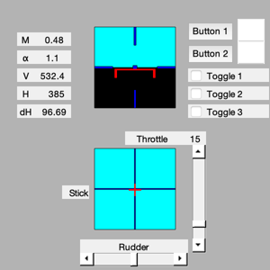
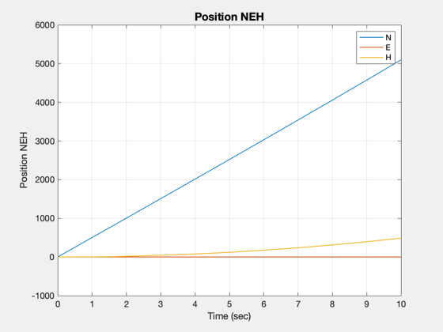

Try different control responses with ideal actuators.
------------------------------------------------------------------------
See also QECI, VTToVB, AC, ACBuild, ACInit, ACPlot, DrawAC, HUD,
HUDCntrl, ACEngEq, ACModes, @acstate/acstate.m, CInputs, TimeGUI
------------------------------------------------------------------------
Contents
Global for the time GUI
global simulationAction
simulationAction = ' ';
Global for the HUD
global hUDOutput
hUDOutput = struct('pushbutton1',0,'pushbutton2',0,'checkbox1',0,...
'checkbox2',0,'checkbox3',0);
Select actuator
actuatorName = 'elevator';
F16 database
d = ACBuild('F16');
d.theta0 = 0;
d.wPlanet = [0;0;0];
d.actuator.name = [];
d.aero.name = 'ACAero';
d.engine.name = 'ACEngine';
d.rotor.name = [];
d.sensor.name = 'ACSensor';
d.disturb.name = [];
Load the standard atmosphere
d.atmData = load('AtmData.txt');
d.atmUnits = 'eng';
Control
d.control.throttle = 0.1485;
d.control.elevator = -1.931;
d.control.aileron = -7e-8;
d.control.rudder = 8.3e-7;
Initial state vector
alpha = 0.03936;
beta = 4.1e-9;
vT = 502;
v = VTToVB( vT, alpha, beta );
cG = [0.3;0;0];
r = [2.092565616797901e+07+100;0;0];
eulInit = [0;0.03936;0.00];
q = QECI( r, eulInit );
w = [0;0;0];
wR = 160;
engine = ACEngEq( d, v, r );
mass = 1/1.57e-3;
inertia = [9497;55814;63100;0;-982;0];
actuator = [];
sensor = [];
flex = [];
disturb = [];
Initial time and state
t = 0;
x = acstate( r, q, w, v, wR, mass, inertia, cG, engine, actuator, sensor, flex, disturb );
Initialize the model
dT = 0.01;
nSim = 10/dT;
d = ACInit( x, d );
gLin = AC( x, 0, 0, d, 'linalpha');
aC = get( gLin, 'a' );
Display aircraft rigid body modes
ACModes( gLin );
--------------------------------------------------------------------------------------------------------------
Rigid Body Aircraft Modes
Phugoid Short Period Dutch Roll Roll Spiral
s -1.2827 ± 1.9411 -0.0085 ± 0.0605 -0.4445 ± 3.2915 -3.5900 -0.0122
zeta 0.551 0.139 0.134 0.000 0.000
tau 3.24 103.91 1.91 0.28 82.18
--------------------------------------------------------------------------------------------------------------
phi 1.19e-04 ± -2.71e-04 -1.19e-07 ± -3.97e-06 -3.58e-02 ± -2.95e-01 -2.79e-01 1.00e+00
theta 6.07e-02 ± -7.58e-02 -4.01e-04 ± -1.88e-03 -1.43e-04 ± 6.46e-05 -3.33e-06 -9.18e-05
omega x 3.79e-04 ± 5.81e-04 2.41e-07 ± 3.65e-08 1.00e+00 ± 0.00e+00 1.00e+00 -1.46e-02
omega y 6.93e-02 ± 2.15e-01 1.17e-04 ± -8.26e-06 -1.49e-04 ± -4.98e-04 1.19e-05 1.12e-06
omega z -1.06e-04 ± -7.23e-05 9.77e-09 ± -2.50e-07 -3.08e-01 ± 3.38e-01 1.47e-02 6.30e-02
vT 1.00e+00 ± 0.00e+00 1.00e+00 ± 0.00e+00 -6.24e-04 ± -1.01e-03 -1.84e-05 2.96e-01
alpha 9.41e-02 ± -4.50e-02 -1.46e-04 ± 1.32e-06 -1.40e-04 ± 1.64e-05 -4.19e-06 -7.36e-05
beta 5.70e-06 ± -6.85e-05 -2.73e-08 ± -1.02e-08 -1.11e-01 ± -9.98e-02 -1.99e-03 3.07e-03
--------------------------------------------------------------------------------------------------------------
Set up the HUD
dHUD.atmData = d.atmData;
dHUD.atmUnits = 'eng';
cHUD.control = d.control;
cHUD.elevatorMax = 90;
cHUD.aileronMax = 90;
cHUD.rudderMax = 90;
cHUD.dT = dT;
hHUD = HUD( 'init', dHUD, x, [], cHUD );
Set up the aircraft display
gF16 = load('gF16');
hF16 = DrawAC( 'init', gF16, x, [], d.atmUnits );
Set up the control inputs
switch actuatorName
case 'elevator'
cDS.dT = 0.5;
cDS.magnitude = 2;
cDS.init = d.control.elevator;
case 'throttle'
cDS.dT = 3;
cDS.magnitude = 0.1;
cDS.init = d.control.throttle;
case 'aileron'
cDS.dT = 2;
cDS.magnitude = 5;
cDS.init = d.control.aileron;
case 'rudder'
cDS.dT = 0.5;
cDS.magnitude = 2;
cDS.init = d.control.rudder;
otherwise
error([actuatorName 'is not available'])
end
Initialize the plots
plots = [ 'Euler angles ';...
'Quaternion ';...
'Quaternion NED To B';...
'Angular rate ';...
'Position ECI ';...
'Velocity ';...
'Alpha ';...
'Rudder ';...
'Throttle ';...
'Aileron ';...
'Elevator '];
dPlot = ACPlot( x, 'init', plots, d, nSim, dT, nSim );
Initialize the time display
tToGoMem.lastJD = 0;
tToGoMem.lastStepsDone = 0;
tToGoMem.kAve = 0;
ratioRealTime = 0;
[ ratioRealTime, tToGoMem ] = TimeGUI( nSim, 0, tToGoMem, 0, dT, 'F16 Simulation' );
x(9) = 0.001;
for k = 1:nSim
[ ratioRealTime, tToGoMem ] = TimeGUI( nSim, k, tToGoMem, ratioRealTime, dT );
hHUD = HUD( 'run', dHUD, x, hHUD, cHUD );
switch actuatorName
case 'elevator'
d.control.elevator = CInputs( t, 1, cDS, 'doublet' );
case 'throttle'
d.control.throttle = CInputs( t, 1, cDS, 'doublet' );
case 'aileron'
d.control.aileron = CInputs( t, 1, cDS, 'doublet' );
case 'rudder'
d.control.rudder = CInputs( t, 1, cDS, 'doublet' );
end
dPlot = ACPlot( x, 'store', dPlot, d.control );
hF16 = DrawAC( 'run', gF16, x, hF16, d.atmUnits );
x = AC( x, t, dT, d );
t = t + dT;
switch simulationAction
case 'pause'
pause
simulationAction = ' ';
case 'stop'
return;
case 'plot'
break;
end
HUDCntrl;
end
TimeGUI('close');


Create the plots
ACPlot( x, 'plot', dPlot );
